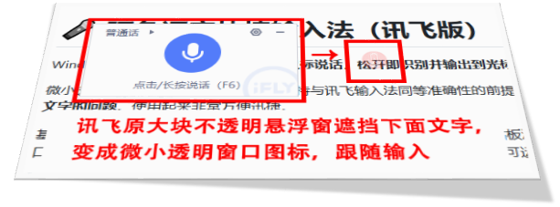

Windows 屏幕常驻语音输入法：按住鼠标说话，松开即识别并输出到光标处。
长按鼠标左键呼出输入按钮，在保持与讯飞输入法同等准确性的前提下，解决讯飞输入法自带的大块悬浮窗口遮盖文字的问题。使用起来非常方便迅捷。
基于讯飞开放平台「语音听写 iat」引擎，识别结果通过模拟键盘/剪贴板注入到任意应用——记事本、浏览器、聊天窗口、办公软件均可使用。打包为单文件 exe，无需安装 Python 环境即可运行。
特色：零学习成本的长按说话交互 · 单文件免安装 · 支持开机自启 · 语音速记模式
🔗 GitHub 仓库：arthurqwang/ArthurVoiceInput
| 特性 | 说明 |
|---|---|
| 🖱️ 长按说话 | 在任意输入位置长按鼠标左键（约 0.3s）呼出浮窗，按住说话、松手识别 |
| 🎙️ 讯飞 iat 引擎 | 16kHz 音频 WebSocket 实时听写，中文识别稳定 |
| ⌨️ 三种注入模式 | clipboard（Ctrl+V 粘贴，默认）/ type（底层键盘模拟）/ kb（语音速记到 markdown 文件） |
| 🔑 全局热键 | Ctrl+Alt+Space 按住也可录音 |
| 🚀 单文件 exe | PyInstaller 打包，脱离 Python 环境独立运行（约 33MB） |
| 🔄 智能重启 | 右键菜单「重启」一键重启，配置改动即时生效 |
| 🌅 开机自启 | 配置窗口勾选即写注册表；exe 每次启动自检自愈（改名/移动后自动修正） |
| 📡 代理友好 | 自动读取 HTTPS_PROXY / HTTP_PROXY 走代理（适配内网） |
ArthurVoiceInput.exe（64 位 Windows 8.1+）APPID / APIKey / APISecret 三项pip install -r requirements.txt
python voice_input.py| 变量 | 默认值 | 说明 |
|---|---|---|
VI_MODE |
clipboard |
注入方式：clipboard / type / kb |
VI_KB_DIR |
./voice_notes |
kb 模式落盘目录（语音速记文件） |
XFYUN_APPID |
— | 讯飞密钥（也可写入同目录 xfyun_config.ini） |
XFYUN_APIKEY |
— | 同上 |
XFYUN_APISECRET |
— | 同上 |
> 凭证优先级：环境变量 > xfyun_config.ini（格式见 [xfyun] 段）
pip install pyinstaller
python build_exe.py # 产物：dist/ArthurVoiceInput.exe打包完成后会自动同步开机自启动注册表（若已启用），exe 启动时也会自检修正自启动路径。
ArthurVoiceInput/
├── voice_input.py # 主程序：浮窗 UI / 录音 / 注入 / 菜单 / 自启动
├── xfyun_asr.py # 讯飞 iat WebSocket 引擎（鉴权 / 代理 / 重试）
├── build_exe.py # PyInstaller 打包脚本
├── requirements.txt # Python 依赖
├── run_xfyun.bat # 一键启动脚本（读 xfyun_config.ini 凭证）
├── AVI_logo28.png # 浮窗 idle 图标 / 窗口图标
├── AVI_logo.ico # exe 图标（由 AVI_logo.png 生成）
└── dist/ # 打包产物（ArthurVoiceInput.exe）Q：杀毒软件误报？
A：单文件 exe 未做代码签名，360/Defender 等可能误报，添加信任即可；面向公众大规模分发可考虑代码签名。
Q：首次启动慢？
A：单文件 exe 每次启动需解压到临时目录（约 3~10 秒），属正常；常驻运行后无影响。
Q：识别为空或乱码？
A：确认麦克风正常、网络畅通、说话清晰；讯飞对低音量前段易"脑补"乱码，可适当靠近麦克风。
Q：免费额度多少？
A：讯飞每日免费 500 次，每次最长 60 秒。
Q：exe 改名/移动后开机自启动失效？
A：不会。exe 每次启动自动自检，若自启动项未指向当前 exe 会自动修正；build_exe.py 打包后也会自动同步。
authorization，WSS 握手（iat‑api.xfyun.cn/v2/iat）UpdateLayeredWindow per‑pixel alpha 半透明圆饼，录音波形动画欢迎 Star ⭐、Issue 反馈与 PR 共建！